#9341 Proud Mary
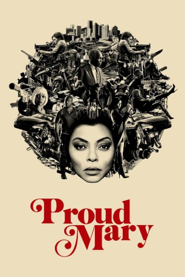 
 IMDB-Wertung: 4.9 / 10
IMDB-Wertung: 4.9 / 10  Tomatometer: 28
Tomatometer: 28  Metascore: 35
Metascore: 35 
Die erfolgreiche Auftragskillerin Mary (Taraji P. Henson) arbeitet in Boston für eine Mafiafamilie. Doch ihr Leben wird komplett auf den Kopf gestellt, als ein Auftrag schiefgeht und sie auf einen kleinen Jungen (Jahi Di'Allo Winston) trifft, der in ihr mütterliche Gefühle weckt, von denen sie nicht wusste, dass sie sie hat.
Jahr: 2018
Dauer: 89 Minuten
FSK: 18
Land: USA Studio: Big Picture 2 FilmsTonspuren: DD5.1 - ,
Untertitel:
Auflösung: 1080p (1920x800) Größe: 7127 MB
Genre: Action, Thriller, Krimi
Regisseur: Babak Najafi
Drehbuch: Lukas Feigelfeld
Soundtrack: Fil Eisler
Darsteller:
 Taraji P. Henson als Mary
Taraji P. Henson als Mary Billy Brown als Tom
Billy Brown als Tom- Jahi Di'Allo Winston als Danny
- 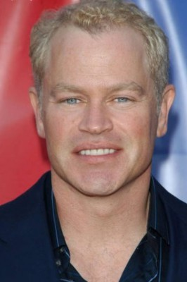 Neal McDonough als Walter
- Margaret Avery als Mina
- 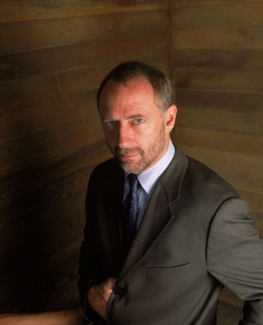 Xander Berkeley als Uncle
- 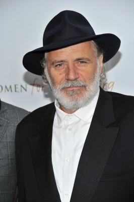 Rade Serbedzija als Luka
- 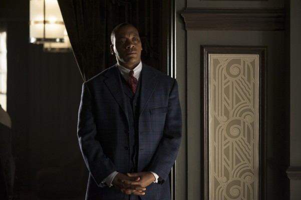 Erik LaRay Harvey als Reggie
- 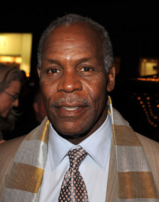 Danny Glover als Benny
- 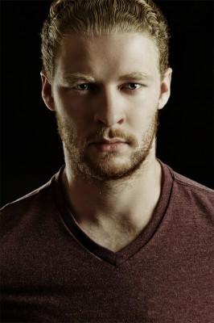 Owen Burke als Jerome
- Therese Plaehn als Saleswoman
- Alex Portenko als Ivan
- Airon Armstrong als Viktor
- Jose Guns Alves als Maurice
- Vladimir Orlov als Nicolai
- Al'Jaleel McGhee als Omar
- 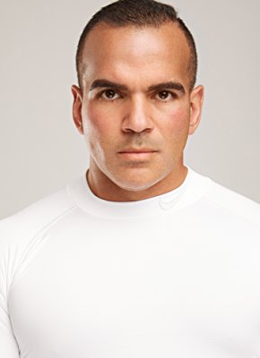 Ralph Ayala als Dock Worker (uncredited)
- David Chen als Machine Gun Thug (uncredited)
- 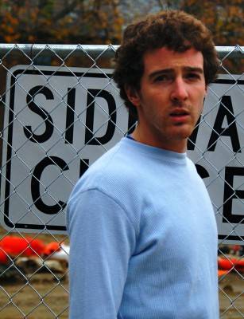 Jim Ford als Vagrant (uncredited)
- 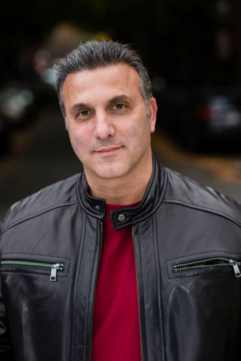 Arthur Hiou als Koslov Guard (uncredited)
- Ken Kansky als Forklift Driver (uncredited)
- Rob Lévesque als Pedestrian (uncredited)
- 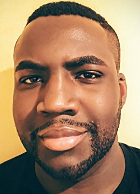 Adrian M. Mompoint als Tom's Hitman (uncredited)
- 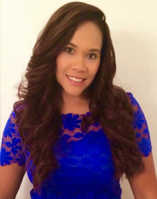 Leah Procito als Jogger (uncredited)
- Marinko Radakovic als Koslov Bodyguard (uncredited)
- John Sarnie als Forklift Driver (uncredited)
- Adobuere Ebiama als Woman
- Bo Cleary als Benny's Guy / Tyson
- James Milord als Miller
- Gene Ravvin als Sergei
- Kevin O'Peterson als Rick
- Roger Dillingham Jr. als Derek (uncredited)
- Shawn Doherty als Maxim (uncredited)
- Jeffery Kincannon als Truck Driver (uncredited)
- Steven Mulcahy Jr. als Dockworker (uncredited)
- Lance Norris als Koslov Guard (uncredited)
- 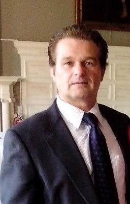 Joseph Oliveira als Gangster Tanev (uncredited)
- Yuri Quinnie als Mateo (uncredited)
 Stew Replogle als Thin Man / Ukranian Assassin (uncredited)
Stew Replogle als Thin Man / Ukranian Assassin (uncredited)
Datei: X:\FSK18-2018\Proud Mary (2018, FSK18, 1920x800).mkv seit 30.07.2018
Festplatte: FSK18
 Es gibt insgesamt 23 Filme in der Gruppe 'FSK18-2018'
Es gibt insgesamt 23 Filme in der Gruppe 'FSK18-2018'